ETH 자율굴착 논문 카드 요약 2014-2026
ETH 자율굴착 논문 카드 요약 2014-2026
[!note] 2014 · 로봇 중심 확률 고도지도 1) 대표그림
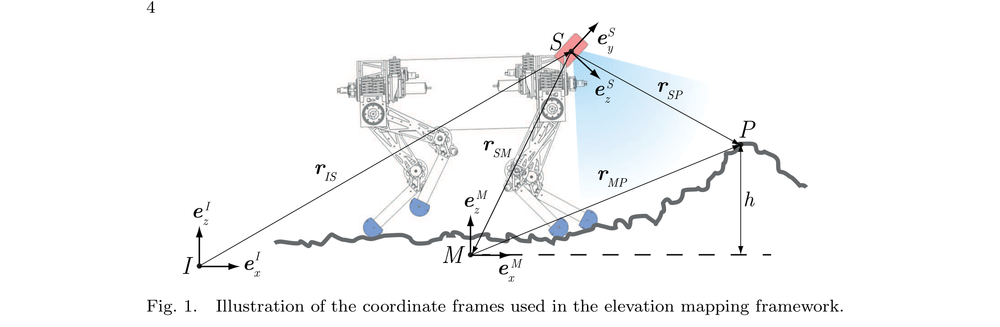
2) 요약
거리센서와 자세 추정의 불확실성을 셀별로 융합하고 지도를 로봇과 함께 이동시켜, 위치 드리프트에도 일관된 국소 고도지도를 생성
3) 방법
- 거리 측정값을 로봇 좌표계의 높이와 분산으로 변환
- 자세 공분산과 센서 잡음을 반영해 각 격자의 높이를 확률적으로 갱신
- 로봇 이동량만큼 지도를 옮기고 필요한 셀만 병렬 융합
4) 토의
- 한계: 단일 표면의 2.5D 지도이며 소형 4족 보행로봇에서만 검증
- 연구주제: 굴착으로 지형이 사라지거나 가려질 때 작업 상태를 이용해 셀 불확실성을 갱신하는 지도를 연구
[!note] 2016 · ROS 다층 Grid Map 1) 대표그림
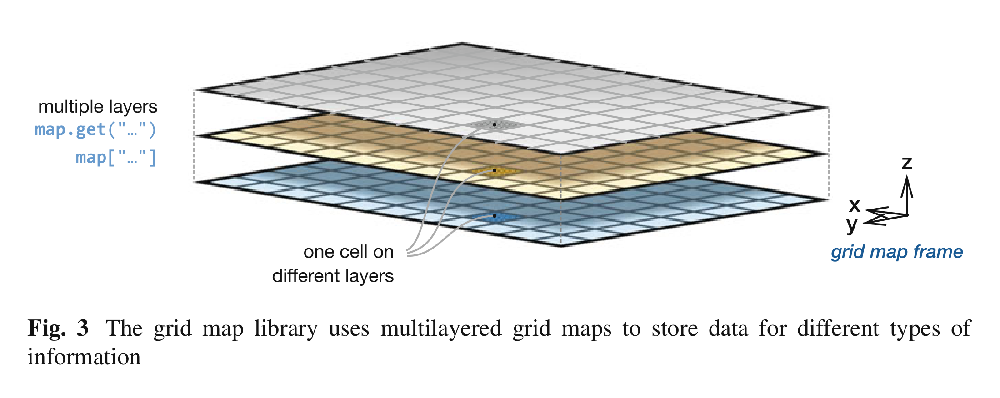
2) 요약
고도·분산·색상 등 여러 격자층을 원형 버퍼로 관리하며 이동로봇의 실시간 지형 처리에 재사용할 수 있는 ROS 라이브러리
3) 방법
- Eigen 행렬 기반 GridMap에 필요한 데이터층과 좌표계를 정의
- 로봇 이동 시 원형 버퍼의 경계만 이동해 기존 셀을 재활용
- 영역 iterator와 filter chain으로 고도지도·법선·주행성을 계산
4) 토의
- 한계: 2.5D 자료구조 구현이 중심이며 복수 표면과 동적 지형의 처리 정책은 미제공
- 연구주제: 고도·토질·압력·작업완료도를 한 지도에서 갱신하는 굴착 전용 다층 Grid Map을 개발
[!note] 2016 · IBEX 굴착기 원격조작 플랫폼 1) 대표그림
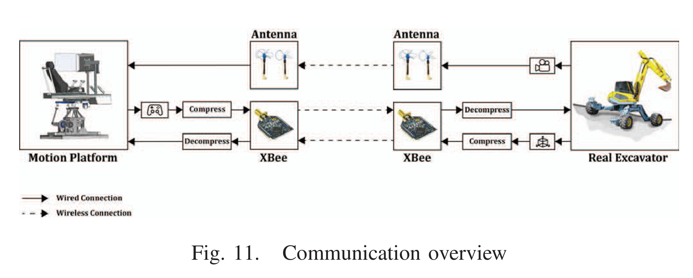
2) 요약
굴착기 자세를 3자유도 모션 플랫폼과 3면 영상으로 재현, 위험 현장 원격조작·운전자 훈련 지원
3) 방법
- 실기 또는 Vortex 시뮬레이터에서 차체 roll·pitch·yaw를 수신
- 차동 레버 두 개와 회전 베어링으로 조종석 자세를 재현
- 굴착기 조이스틱과 3면 영상을 연결해 동일 작업을 원격 수행
4) 토의
- 한계: 소규모 시뮬레이터 평가, 실기 통신지연·3D 상황인지 미검증
- 연구주제: 영상·음향·유압 하중의 지연을 보상하는 예측형 멀티모달 굴착기 원격조작을 연구
[!note] 2016 · 거친 지형 계층형 주행계획 1) 대표그림
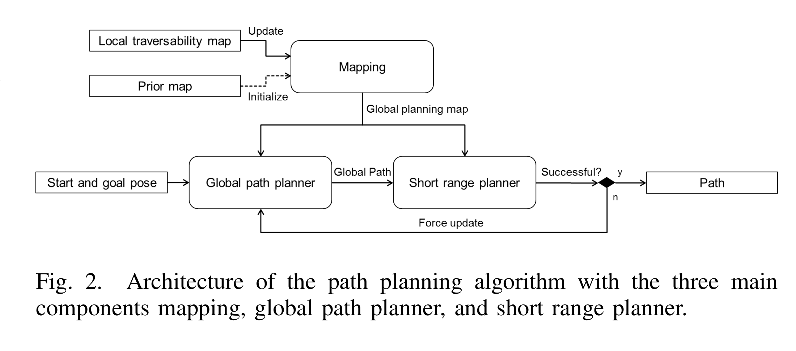
2) 요약
경사·거칠기·단차와 로봇 발자국을 평가한 주행성 지도에서 계층형 RRT*가 안전하고 짧은 거친 지형 경로를 탐색
3) 방법
- 고도지도에서 경사·거칠기·단차를 계산해 주행성 지도를 생성
- 원형·다각형 발자국을 단계적으로 적용해 전역 RRT* 경로를 탐색
- 새 지형 관측 시 단거리 계획기로 경로 반복 보정
4) 토의
- 한계: StarlETH 중심의 저속 지도와 기하 규칙이라 대형 장비의 전복·슬립 위험은 미고려
- 연구주제: 굴착기 차체 자세와 지지다각형을 비용으로 넣은 장비별 3D 주행계획기를 연구
[!tip] 2017 · 힘 기반 굴착 계획·제어 · 🧪 재현 추천 1) 대표그림
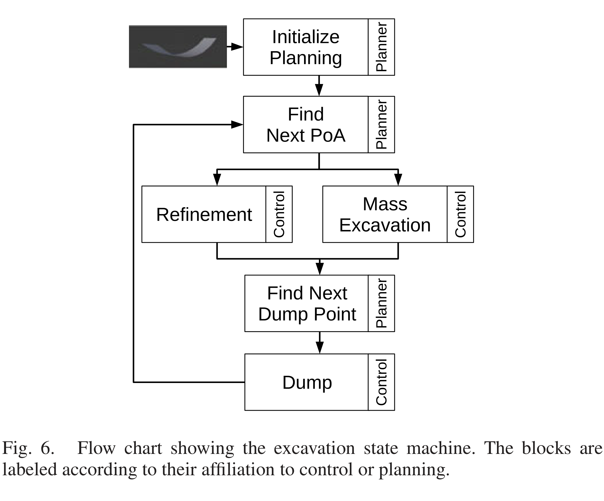
2) 요약
토양 모델 없이 버킷 힘·토크 궤적으로 한 번의 굴착을 제어하고, 반복 계획기가 목표 지형까지 공격점과 덤프점을 갱신
3) 방법
- 관입·끌기·닫기 구간의 버킷 힘·토크 기준을 정의
- 계층형 최적화로 힘과 자세를 추종하며 관절 한계와 여유자유도를 처리
- 고도 오차에서 공격점·덤프점 재선정, 목표 형상까지 반복
4) 토의
- 한계: 다중 굴착 결과가 시뮬레이션에 머물고 큰 돌에 대한 복구 동작이 부재
- 연구주제: 실차 압력·속도로 장애물 접촉을 판별하고 우회 공격점을 재계획하는 힘 기반 굴착기를 연구
[!note] 2017 · 실시간 의미 지형지도 · 외부 기반기술 1) 대표그림
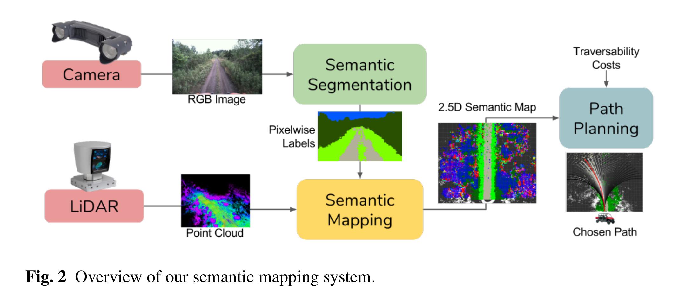
2) 요약
RGB 의미분할과 LiDAR 고도를 2.5D 지도에 융합해 길·풀·장애물을 구분하고 오프로드 차량의 경로 비용으로 활용
3) 방법
- 오프로드 영상을 주석화해 경량 FCN 의미분할망을 학습
- 픽셀 클래스를 LiDAR 점군에 투영해 고도·의미 격자를 갱신
- 후보 경로의 의미별 통과 비용을 계산해 최적 경로를 실행
4) 토의
- 한계: 수작업 라벨과 ATV 단일 데이터에 의존해 먼지·계절·새 현장 일반화가 어려움
- 연구주제: 작업 중 수집되는 LiDAR와 주행 반응으로 라벨 없이 적응하는 건설현장 의미지도를 연구
[!note] 2018 · 드리프트 강건 확률 지형지도 1) 대표그림
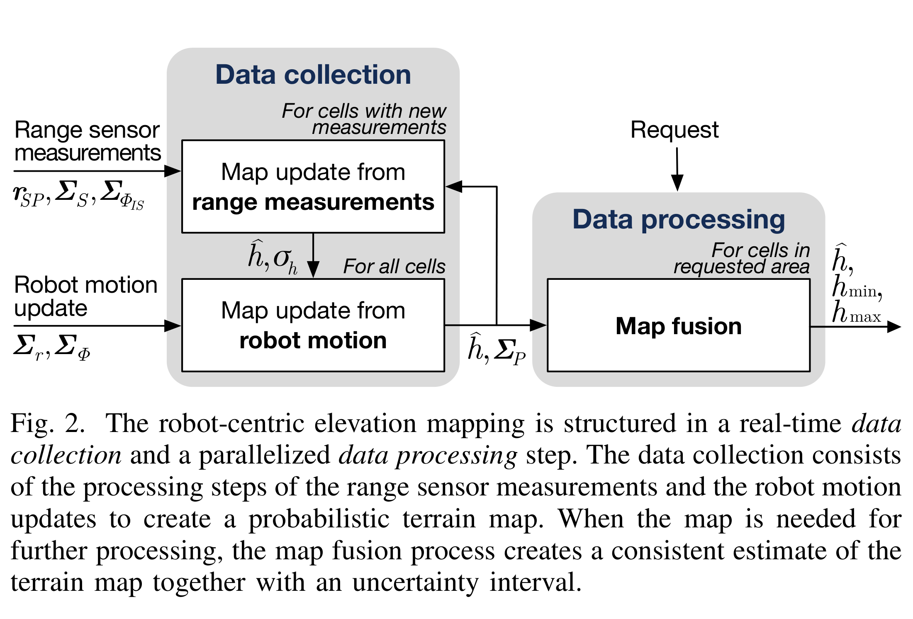
2) 요약
고유감각 위치추정 드리프트의 로봇 중심 전파, 고도 셀별 상·하 신뢰구간 제공
3) 방법
- 거리센서 측정과 자세 공분산으로 셀별 높이·분산을 갱신
- 로봇 이동 불확실성에 따라 기존 지도 분포를 공간적으로 전파
- 데이터 수집과 지도 융합을 분리해 실시간으로 신뢰구간을 출력
4) 토의
- 한계: 지형이 정적이고 단일 높이라고 가정, 굴착 중 급격한 변화·가림 구분 불가
- 연구주제: 버킷 작업영역의 셀을 동적 상태로 전환해 측정 누락과 실제 굴착 변화를 분리
[!tip] 2019 · 자율 자유형 트렌칭 · 🧪 재현 추천 1) 대표그림
2) 요약
작업 인지형 고도지도, 충돌회피 궤적, 힘 기반 굴착 상태기를 HEAP에 통합해 자유곡선 도랑을 실차로 정밀 굴착
3) 방법
- LiDAR 지도에 버킷 경로와 가림·낙토 정보를 반영해 지형을 갱신
- 목표 지형에서 공격점을 고르고 SQP로 충돌 없는 접근·이탈 경로를 생성
- 힘 기반 관입·끌기·닫기 실행, 고도 오차 수렴까지 반복
4) 토의
- 한계: 단일 장비의 통제된 트렌칭이며 큰 장애물과 장시간 작업 복구는 미검증
- 연구주제: 돌·뿌리 접촉을 감지해 공격 방향과 작업 순서를 바꾸는 자율 복구 상태기를 연구
[!note] 2019 · 굴착기 전신 동작계획 1) 대표그림
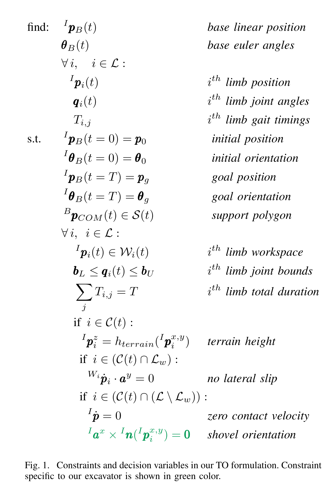
2) 요약
차체·관절·바퀴 접촉일정을 동시에 최적화해 주행과 보행을 섞어 거친 지형을 통과하는 전신 궤적을 생성
3) 방법
- 차체·말단 위치·관절·접촉시간을 Hermite spline 변수로 설정
- 지형높이·지지다각형·무슬립·관절범위를 NLP 제약으로 구성
- 초기 접촉일정을 넣고 IPOPT로 전신 궤적과 구간시간을 함께 최적화
4) 토의
- 한계: 계산량이 커 오프라인 계획 중심이고 실제 센서오차와 지반 슬립 검증이 부족
- 연구주제: 이전 해와 국소 지형을 재사용해 전신 접촉계획을 실시간 MPC로 갱신
[!note] 2020 · 자율 건식 석벽 시공 1) 대표그림
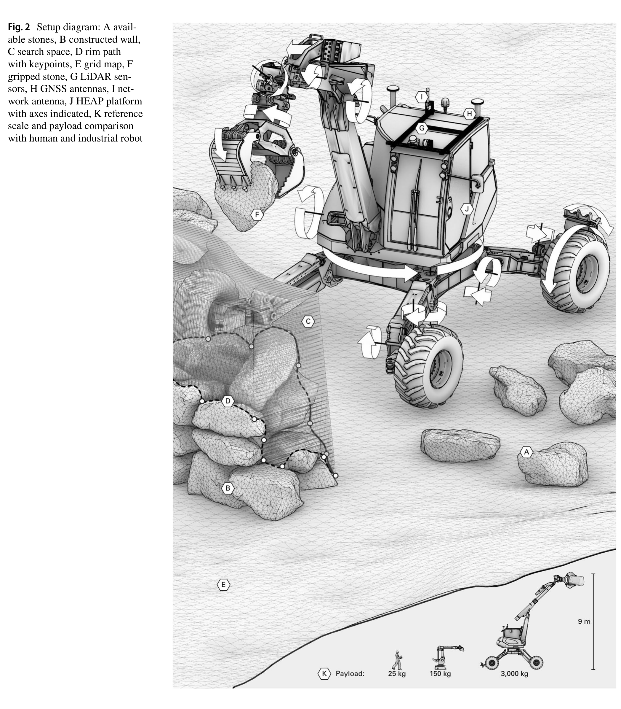
2) 요약
굴착기 LiDAR로 불규칙 석재를 현장에서 스캔하고 매 배치 직전 형상을 계획해 40개 돌로 3m 높이의 건식 석벽을 시공
3) 방법
- 주변 돌과 벽을 LiDAR로 지도화하고 개별 석재의 3D 모델을 생성
- 목표 벽과 현재 시공 오차에서 다음 돌의 안정 배치 자세를 계산
- 그리퍼로 돌을 집어 배치하고 재스캔한 결과로 다음 계획을 갱신
4) 토의
- 한계: 석재 40개와 단일 벽 검증이며 스캔·계획·배치 시간이 길고 특수 그리퍼가 필요
- 연구주제: 빠른 부분형상 추정과 학습 기반 안정도 예측으로 석재 선택·배치 시간을 단축
[!note] 2020 · 지형 적응 전신 계획·제어 1) 대표그림
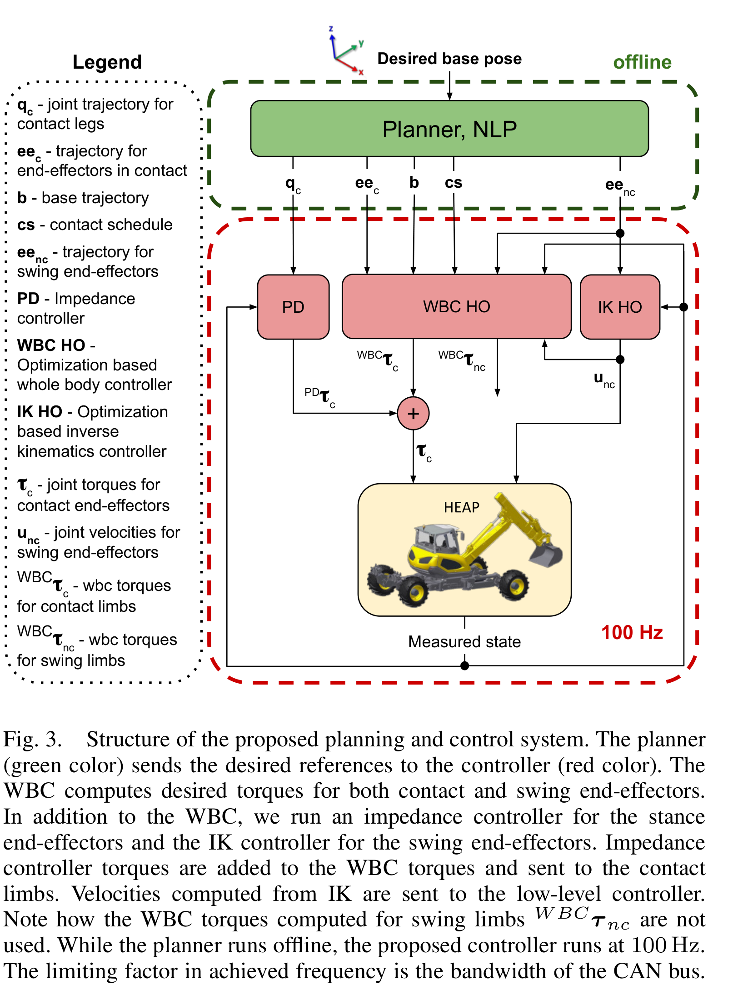
2) 요약
궤적최적화와 계층형 전신제어의 결합, HEAP 토크·속도 관절을 이용한 주행·보행
3) 방법
- 지형·목표 자세에서 차체·바퀴·접촉 궤적 오프라인 최적화
- WBC가 접촉 관절 토크를, IK가 비접촉 관절 속도를 계산
- 100Hz 차체·말단 추종, 미관측 요철 순응
4) 토의
- 한계: 계획은 오프라인이고 관성·유압 대역폭을 단순화해 빠른 동작에는 적용하기 어려움
- 연구주제: 유압 지연과 지반 접촉을 포함한 짧은 지평선 전신 MPC를 실차에서 구현
[!tip] 2020 · 데이터 기반 유압 RL 제어 · 🧪 재현 추천 1) 대표그림
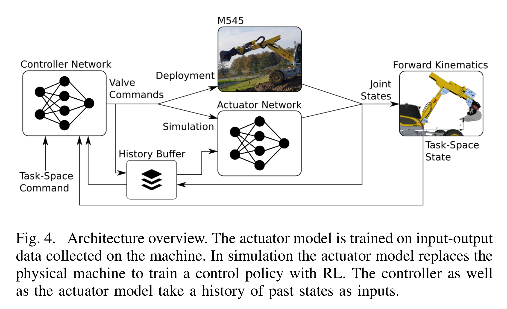
2) 요약
실차 데이터로 유압 액추에이터 모델을 학습하고 그 모델 안에서 RL 제어기를 훈련해 밸브 명령을 실차에 바로 전이
3) 방법
- 4개 팔 관절 상태·밸브 명령·엔진·오일온도의 100Hz 수집
- 과거 상태에서 다음 관절속도를 예측하는 신경 액추에이터 모델을 학습
- 모델 시뮬레이터에서 말단 추종 정책을 RL로 훈련해 실차 밸브에 배치
4) 토의
- 한계: 단일 장비의 자유공간 위치추종 중심이라 접촉하중과 장비 노화에 대한 강건성이 불명확
- 연구주제: 작업 중 압력 오차로 액추에이터 모델을 온라인 보정하는 지속학습형 유압 제어를 연구
[!tip] 2021/2022 · 범용 유압 굴착기 팔 RL · 🧪 재현 추천 1) 대표그림
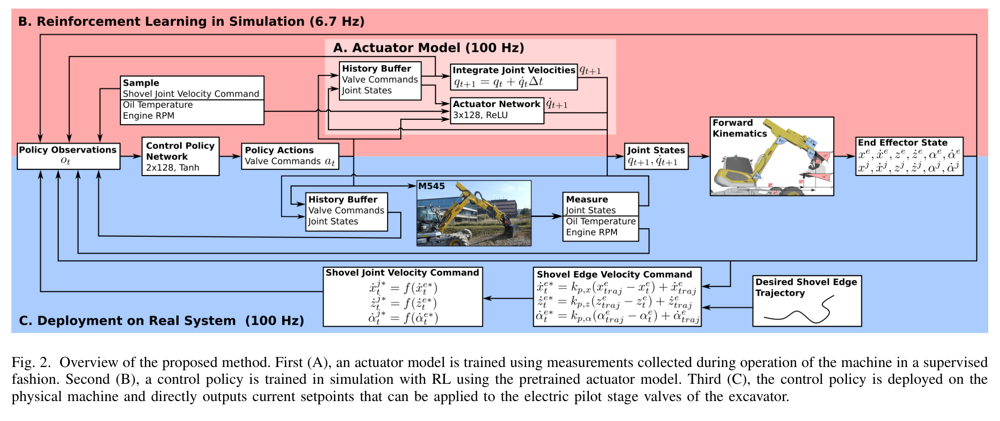
2) 요약
실차로 학습한 유압 모델과 RL 정책만으로 장비별 수작업 게인 조정 없이 말단 속도·궤적을 정밀 추종
3) 방법
- 관절·밸브·엔진·온도 이력으로 다관절 유압 동역학 모델을 학습
- 링크 길이와 학습 모델로 시뮬레이터를 만들고 말단 속도 추종 정책을 훈련
- 정책 출력을 pilot-stage 밸브에 직접 보내 자유공간과 토양 접촉 궤적을 실행
4) 토의
- 한계: 새 장비마다 데이터 수집·모델 재학습 필요, 명시적 안전 보장 부재
- 연구주제: 소량 장비 데이터와 제어 장벽함수로 빠르고 안전하게 전이되는 유압 정책을 개발
[!note] 2021 · 자율 자유형 지형 조성 1) 대표그림
2) 요약
드론 측량·재료중립 설계·HEAP 굴착을 폐루프로 연결해 현장 토사만으로 자유곡면 제방을 자동 조성
3) 방법
- LiDAR 드론으로 현장을 측량해 2.5D 고도지도를 생성
- Rhino 설계에서 절토·성토량을 맞춘 목표 지형과 작업선을 계산
- HEAP가 굴착점·덤프점을 반복 선택하고 실측 고도로 설계를 갱신
4) 토의
- 한계: 한 대의 장비와 제한된 토질에서 장시간 수행했으며 설계·주행·굴착의 공동 최적화는 아님
- 연구주제: 여러 장비의 이동·절토·성토 순서를 함께 최적화하는 폐루프 토공 계획을 연구
[!note] 2021 · 석재 파지·재정렬 계획 1) 대표그림
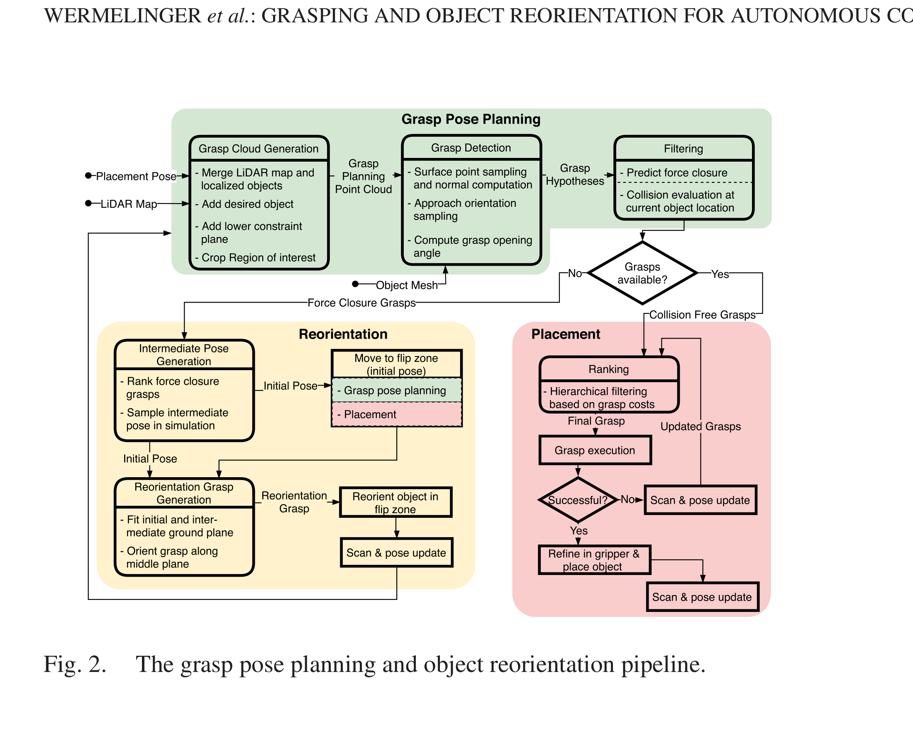
2) 요약
석재 점군에서 충돌 없는 force-closure 파지를 고르고 직접 배치가 어렵다면 물리 시뮬레이션으로 중간 재정렬 자세를 탐색
3) 방법
- LiDAR 점군·복원 mesh에서 그리퍼 파지 후보 대량 생성
- 충돌·접근방향·감싸기·무게중심 비용으로 후보 필터링
- 직접 배치가 불가능하면 안정 중간자세를 시뮬레이션해 재파지 후 배치
4) 토의
- 한계: 정확한 석재 복원·특수 2지 그리퍼 의존, 파지 중 미끄러짐 폐루프 보정 부재
- 연구주제: 손목 힘과 부분 점군으로 미끄러짐·자세 오차를 보정하는 폐루프 석재 조작을 연구
[!note] 2021 · HEAP 자율 보행 굴착기 1) 대표그림
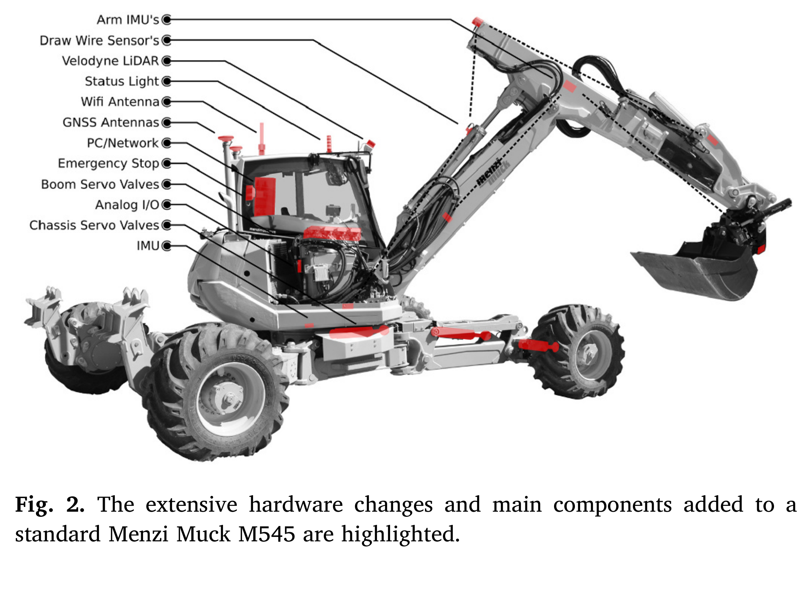
2) 요약
상용 12톤 보행 굴착기에 센서·전기유압 구동·상태추정·차체·팔 제어를 통합한 자율 건설로봇 플랫폼
3) 방법
- GNSS·IMU·LiDAR·실린더 센서와 3종 밸브·조이스틱 구동 장착
- 센서융합으로 차체·관절 상태를 추정하고 CAN·공유메모리 제어 계층을 구성
- 차체 균형·주행·팔 제어 위에 굴착·석벽·임업 작업 모듈을 실행
4) 토의
- 한계: 고가의 맞춤 유압 개조와 안전 운전자가 필요해 다른 상용 장비로 복제하기 어려움
- 연구주제: 센서·밸브 최소 구성과 자동 캘리브레이션을 갖춘 범용 굴착기 retrofit kit를 연구
[!note] 2021 · 고정밀 자유형 굴착 · 종합/학위논문 1) 대표그림
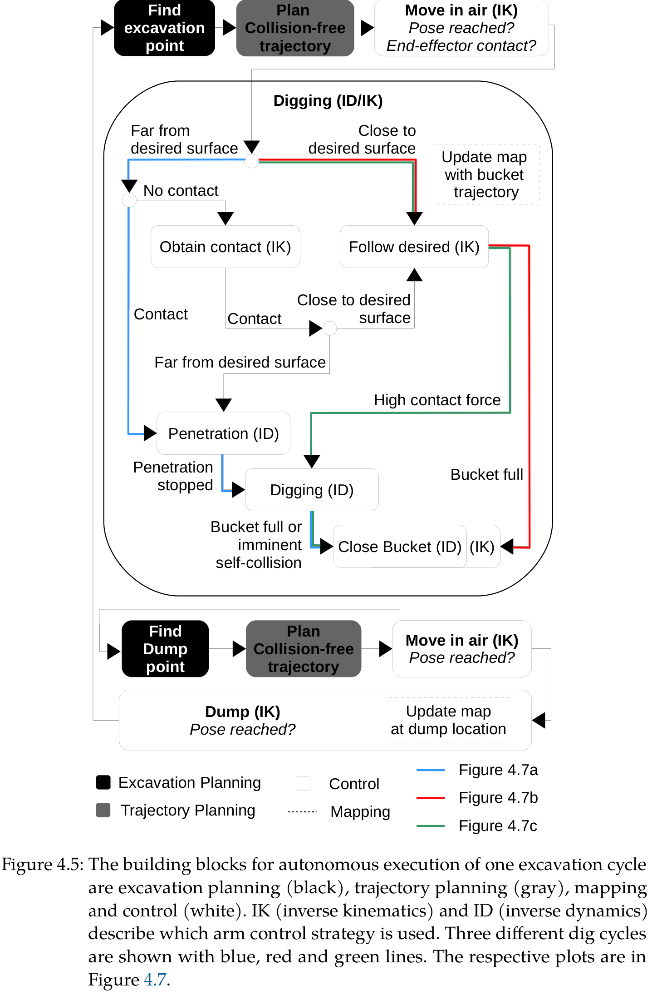
2) 요약
힘 기반 굴착, 작업 인지형 지도, 충돌회피 경로와 설계 연계를 통합해 HEAP의 자유형 트렌치·제방 시공 체계를 정립
3) 방법
- HEAP 센서·유압 구동·상태추정·팔·차체 제어 기반 구축
- 목표 고도·오차에서 공격·덤프점 선정, 힘 기반 굴착·경로계획 반복
- 드론 측량과 매개변수 설계를 연결해 절토·성토가 균형인 자유형 지형을 시공
4) 토의
- 한계: HEAP와 특정 설계 작업에 맞춘 상태기·규칙이 많아 장비와 작업 변화에 재설계가 필요
- 연구주제: 동일 지도와 행동 표현으로 트렌치·제방·정지 작업을 학습하는 범용 토공 정책을 연구
[!note] 2021 · 대형 석재 지도·조작 1) 대표그림
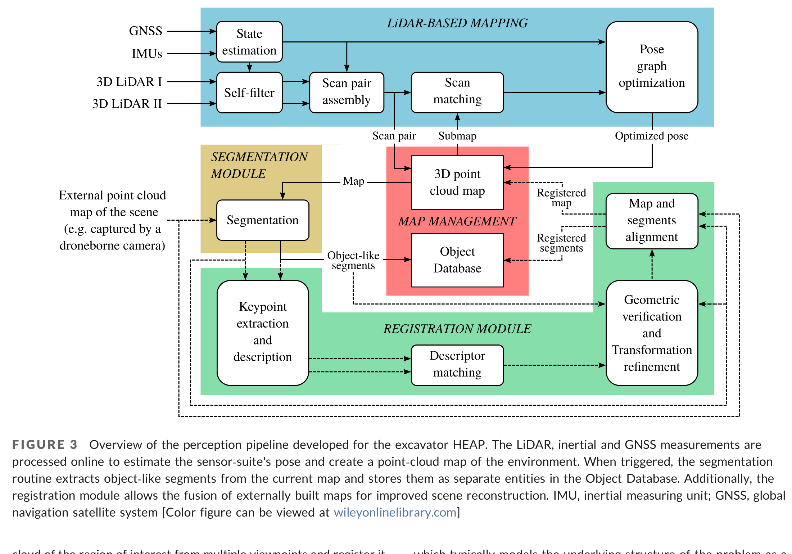
2) 요약
굴착기 LiDAR 지도·드론 3D 복원의 정합, 석재 분할·추적과 충돌 없는 그리퍼 파지 자세 생성
3) 방법
- IMU·GNSS·다중 LiDAR 실시간 점군지도 생성, 드론 점군 정합
- 석재 세그먼트를 분리해 특징·자세와 이동 이력을 객체 DB에 저장
- 통합 점군에서 force-closure 파지를 생성하고 충돌·접근비용으로 선택
4) 토의
- 한계: 외부 드론 지도 정합은 개념검증 수준, 가림·불완전 점군에서 파지 실패 잔존
- 연구주제: 굴착기 시점만으로 객체 신뢰도와 파지 성공률을 함께 갱신하는 온라인 객체 SLAM을 연구
[!note] 2022 · 이중 그래프 건설로봇 위치추정 1) 대표그림
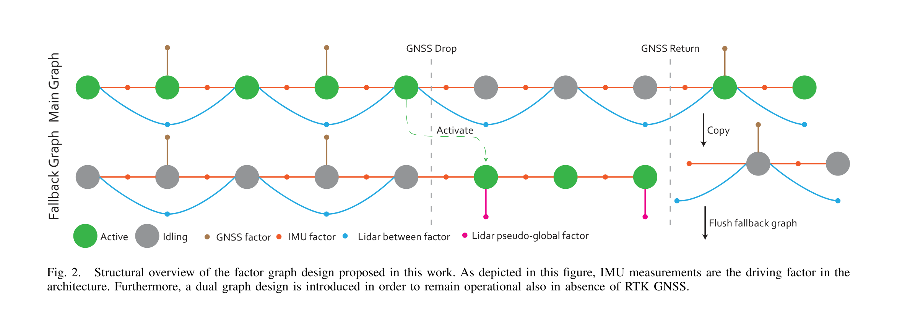
2) 요약
IMU·LiDAR·GNSS를 이중 factor graph에 융합해 고주기 국소 일관성과 전역 정확도를 유지하고 GNSS 중단·복귀를 처리
3) 방법
- IMU 상태의 고주기 graph node화, LiDAR 상대이동·GNSS 절대위치 factor 입력
- 주 graph와 GNSS 미사용 fallback graph를 병렬 유지
- GNSS 신뢰도에 따라 graph를 전환하고 복귀 시 상태를 복사·재정렬
4) 토의
- 한계: 센서 외부보정과 신뢰도 판정이 주어졌다고 가정해 먼지·진동에 따른 동시 열화를 미고려
- 연구주제: factor residual로 센서 고장을 온라인 진단하고 안전속도까지 조정하는 위치 무결성 모니터를 연구
[!note] 2022 · Harveri 소형 정밀 벌목기 · 인접 응용기술 1) 대표그림
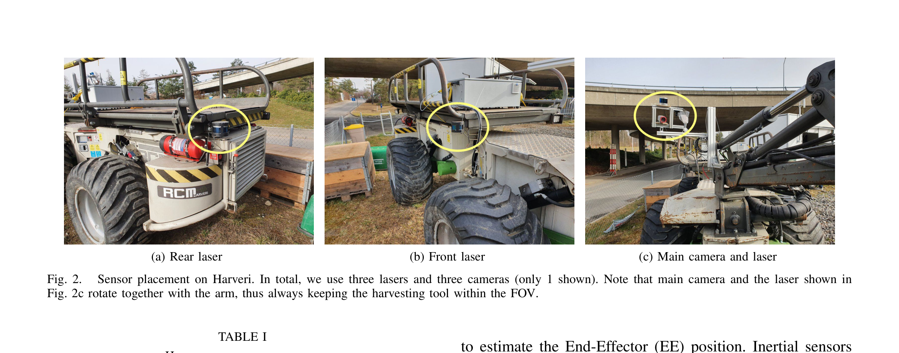
2) 요약
HEAP의 센서·상태추정·제어 구조를 소형 굴절식 벌목기에 이식해 원격조작과 향후 자율 간벌을 위한 플랫폼을 구성
3) 방법
- 차체·붐에 LiDAR·카메라·IMU·엔코더와 전기유압 밸브를 배치
- 온보드 컴퓨터·무선망에서 위치추정·영상·저수준 제어 통합
- HEAP 주행·균형 모듈의 시뮬레이터 이식, 원격조작부터 검증
4) 토의
- 한계: 하드웨어와 자율기능이 개발 중이며 숲에서 위치추정·작업 제어 실험이 부재
- 연구주제: 수목 밀집도와 지반 손상을 함께 고려하는 간벌 경로·붐 조작 통합계획을 연구
[!tip] 2022 · 토질 적응형 굴착 RL · 🧪 재현 추천 1) 대표그림
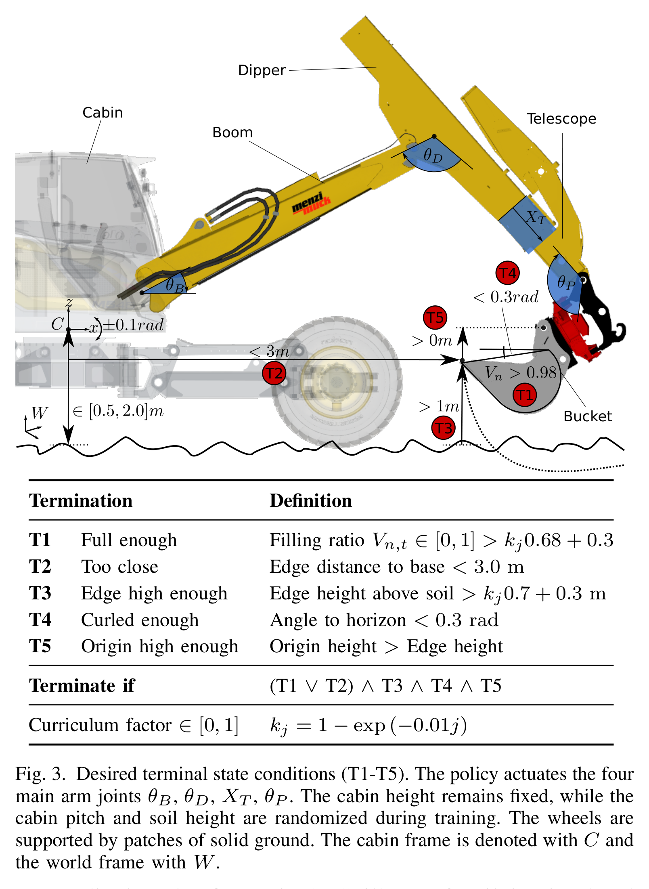
2) 요약
토양 물성을 무작위화한 FEE 시뮬레이터에서 RL 정책을 학습해 토질을 직접 알지 않고도 실차에서 버킷을 버킷 채움
3) 방법
- FEE 토양력의 응집력·마찰·밀도와 장비 상태 무작위화
- 고유감각에서 4개 관절 속도를 출력하도록 PPO 정책을 학습
- 12톤 굴착기 밸브 제어기에 정책을 연결해 연질·경질·혼합 토양을 굴착
4) 토의
- 한계: 평탄 지면과 단순 토양모델을 가정하고 실제 버킷 충전량을 미관측
- 연구주제: 고도지도와 실시간 적재량을 상태에 넣어 경사·다층 토질에 적응하는 RL 굴착을 연구
[!note] 2023 · 현장재료 굴착·석벽 통합 1) 대표그림
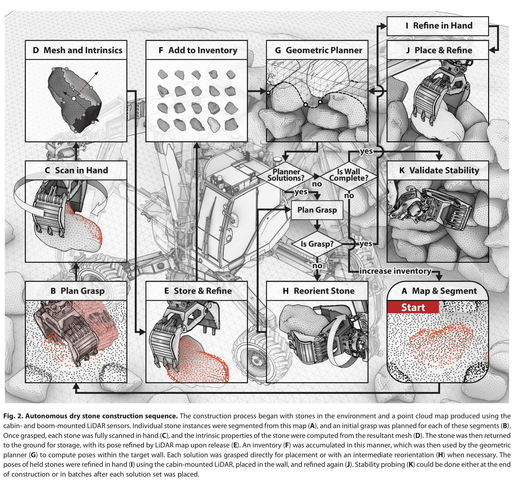
2) 요약
현장 석재의 인식·파지·3D 스캔·배치와 주변 지형 굴착을 한 굴착기에서 연결해 대형 옹벽과 테라스를 시공
3) 방법
- RGB·LiDAR로 석재를 분할하고 파지한 채 회전 스캔해 형상 DB를 생성
- 목표 벽 체적에 맞는 석재 자세를 SDF·정합·안정도 평가로 선정
- 재정렬·배치·재측정과 고도 오차 기반 지형 굴착 반복
4) 토의
- 한계: 특수 그리퍼와 긴 스캔·배치 시간이 필요하고 작업 현장은 사람과 분리
- 연구주제: 굴착·운반·석재배치를 공동 일정화하고 작업자와 안전하게 협업하는 현장 조율기를 연구
[!note] 2023 · 보행-차륜 혼합계획 · 종합/학위논문 1) 대표그림
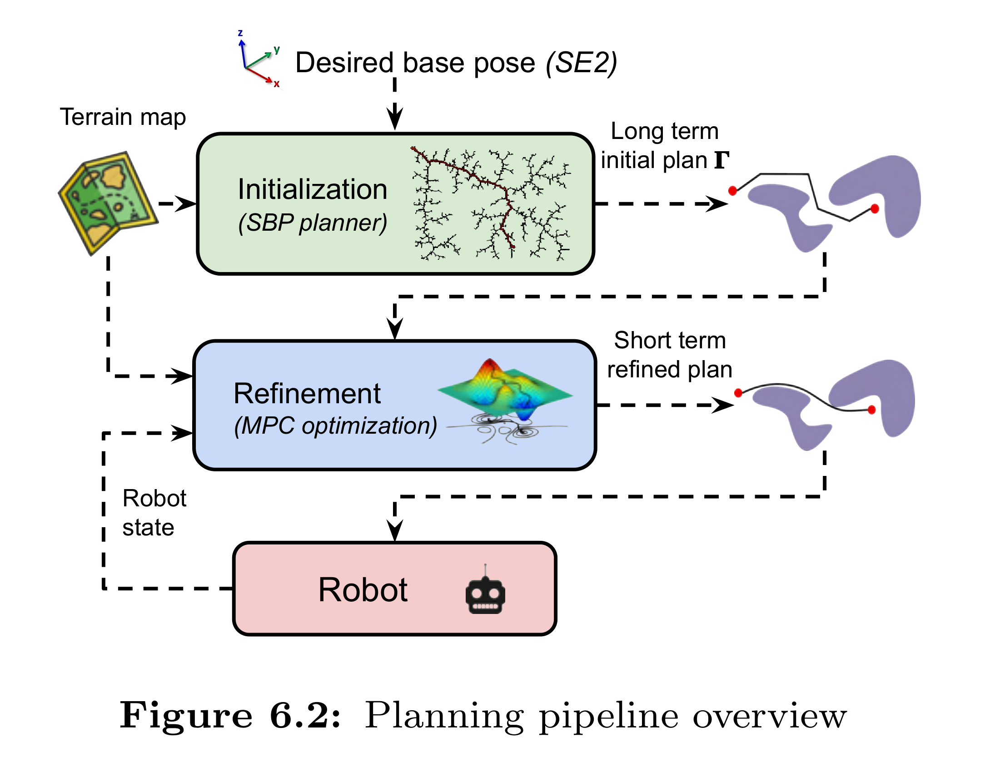
2) 요약
샘플링 기반 장기 탐색과 수치최적화 기반 단기 궤적·제어를 결합해 보행-차륜 로봇의 전신 이동을 실차로 구현
3) 방법
- 고도지도에서 RRT와 도달성 roadmap으로 차체·접촉 후보를 탐색
- 단기 궤적최적화로 관절·접촉일정·충돌·무슬립 제약 충족
- MPC와 가상모델제어가 HEAP·ANYmal의 주행·보행 동작을 추종
4) 토의
- 한계: 여러 계획·제어 계층의 계산량과 수작업 설정이 크고 지도 누락에 민감
- 연구주제: 학습한 지형 위험도와 warm-start 정책으로 전신계획의 실시간성과 실패복구를 향상
[!tip] 2023/2024 · 대규모 자율굴착 작업계획 · 🧪 재현 추천 1) 대표그림
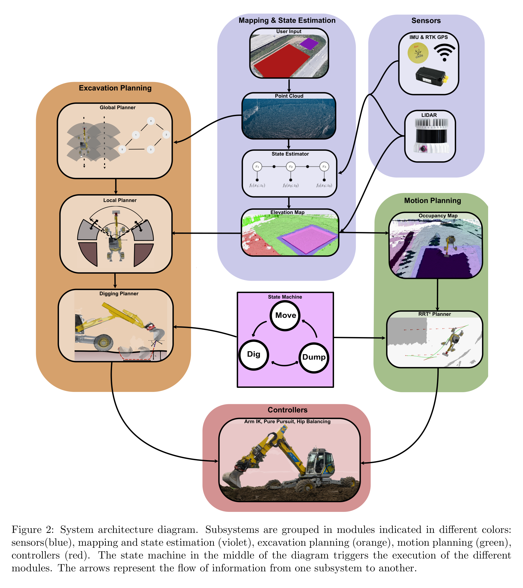
2) 요약
전역 장비 위치·국소 토사 이동·개별 굴착 궤적을 계층적으로 계획해 12톤 굴착기로 대형 pit을 완전 자율 시공
3) 방법
- 목표·금지·덤프 영역과 고도지도를 입력해 boustrophedon cell을 생성
- tree search로 cell·장비 위치 순서 결정, 국소 계획기로 굴착·덤프 영역 선정
- Bayesian optimization으로 굴착 파라미터를 고르고 RRT* 주행과 함께 실행
4) 토의
- 한계: 단순 zig-zag 분해·수동 지형 지정 의존, 주행·토사이동 공동 최적화 부재
- 연구주제: 토사 흐름과 향후 접근성을 상태로 둔 장기 작업순서 학습으로 전역 계획을 대체
[!tip] 2024 · RL 버킷 채움·연속 굴착 · 🧪 재현 추천 1) 대표그림
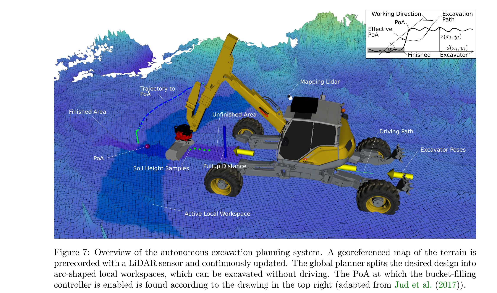
2) 요약
지형·압력·깊이 제약을 보는 RL 정책이 토질에 맞춰 관입-회전 또는 관입-끌기 궤적을 선택해 trench를 연속 굴착
3) 방법
- FEE 토양력과 지형·장비·토질을 무작위화한 고속 시뮬레이터를 생성
- 고도·관절·압력에서 4개 관절 속도를 출력하도록 PPO를 학습
- 전역·국소 계획기와 연결해 12톤 실차로 trench를 반복 굴착
4) 토의
- 한계: 해석 토양모델의 매설 암석·토사 유실 반영 부족, 마무리 평탄화는 수동 규칙
- 연구주제: 적재량·잔여토량을 온라인 추정해 굴착과 마무리 모드를 전환하는 폐루프 정책을 연구
[!note] 2024 · 유압장비 적응형 제어 1) 대표그림
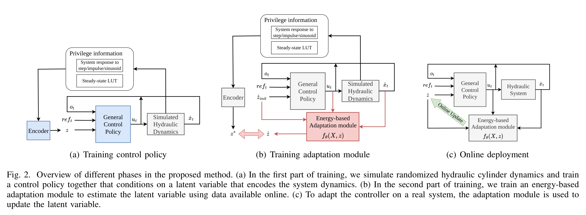
2) 요약
잠재 동역학 조건부 제어기·적응 모듈 공동 학습, 짧은 데이터로 굴착기·벌목기 유압 특성 적응
3) 방법
- 지연·dead zone·마찰·하중을 무작위화한 실린더 시뮬레이터를 생성
- 잠재 동역학을 받는 범용 정책과 rollout 기반 적응 모듈을 학습
- 새 장비의 짧은 동작으로 잠재값을 갱신하고 pilot valve를 직접 제어
4) 토의
- 한계: 저속·단일 실린더 근사를 사용해 큰 관성하중과 빠른 복합동작의 유압 결합을 단순화
- 연구주제: 안전 제약형 meta-adaptation을 이용한 장비 교체 직후 복합관절 제어기 자동 보정
[!note] 2024 · ETHcavation 동적 현장지도·주행 1) 대표그림
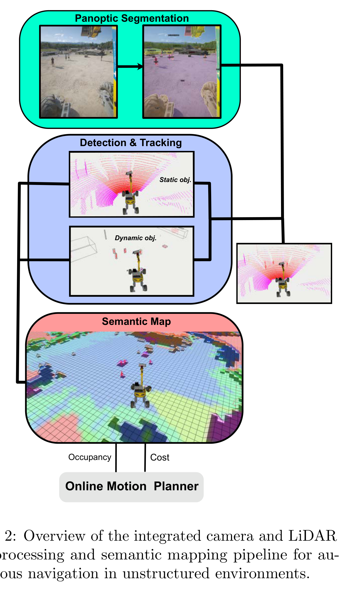
2) 요약
영상 panoptic 분할과 LiDAR·동적 객체추적을 결합해 정적·동적 건설현장 지도를 만들고 온라인 RRT* 주행에 활용
3) 방법
- 502장 현장 영상으로 Mask2Former를 미세조정
- 분할을 점군에 투영하고 Kalman 추적으로 정적·동적 지도를 갱신
- 동적 객체 비용을 반영한 online RRT* 굴착기 경로 재계획
4) 토의
- 한계: 고정 클래스가 흙·잔해의 의미모호성을 놓치며 지도 표현도 완전한 3D가 아님
- 연구주제: 객체 불확실성을 포함한 open-vocabulary 3D 사람·장비 혼재 경로계획
[!note] 2025 · 유압장비 힘·적재량 추정 1) 대표그림
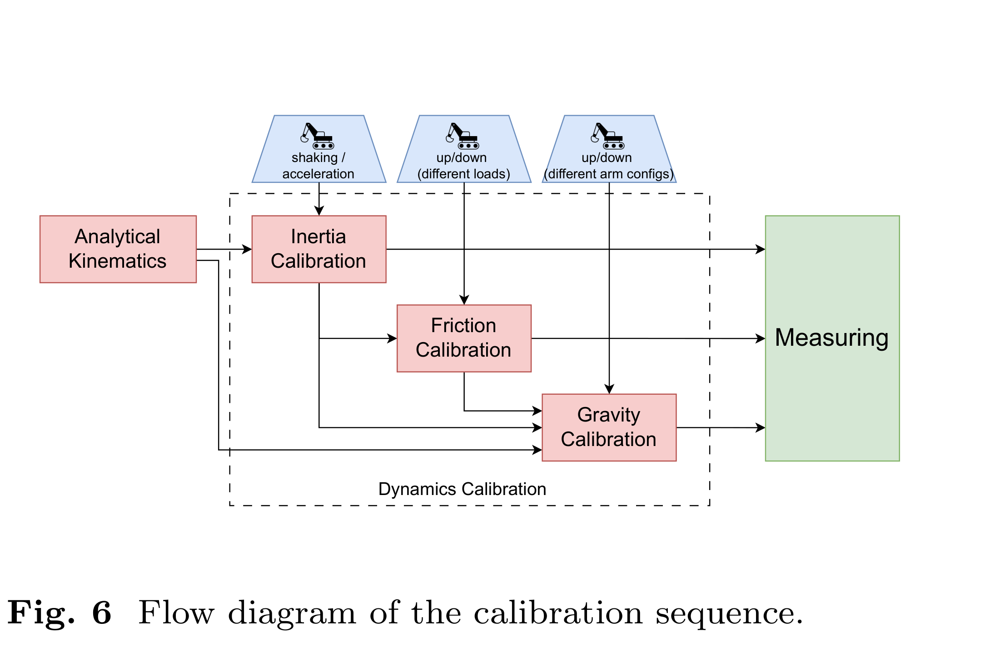
2) 요약
관절기구·실린더 압력·관성센서와 짧은 단계별 보정을 이용한 표준 굴착기 적재량·평면 말단 접촉력 추정
3) 방법
- 압력과 관절기구에서 실린더 힘·관절토크를 계산
- shaking·상하운동으로 관성·마찰·중력 파라미터 순차 식별
- 잔여 토크를 풀어 버킷 적재량과 말단 외력을 실시간 계산
4) 토의
- 한계: 평면 동역학·단순 마찰과 수평 지면에 가깝고 보정동작·센서 정확도에 민감
- 연구주제: 힘·적재량 추정을 장애물 회피와 압력 제한 굴착 제어에 직접 폐루프 연결
[!tip] 2025/2026 · 온라인 모델기반 RL 제어 · 🧪 재현 추천 1) 대표그림
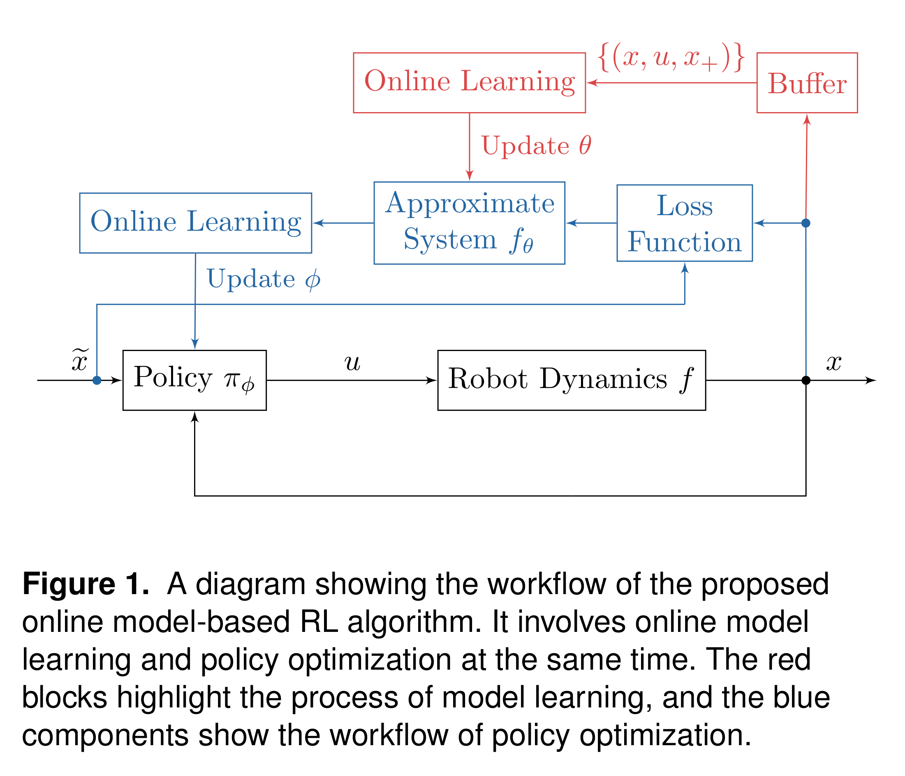
2) 요약
실차 rollout으로 동역학 모델과 정책을 동시에 온라인 갱신해 굴착기 팔을 수시간 안에 학습하고 하중 변화에 적응
3) 방법
- 짧은 정책 rollout 수집과 replay buffer 축적
- 예측손실로 근사 동역학 모델을 온라인 갱신
- 모델 미분 기반 정책 최적화와 새 rollout의 교대 반복
4) 토의
- 한계: 팔 궤적추종만 검증해 토양 접촉·희소보상 작업과 실차 탐색 안전성은 미검증
- 연구주제: 압력·접촉 사건·안전 제약형 온라인 MBRL의 굴착 중 모델 지속 보정
[!tip] 2025 · ExT 다중작업 굴착 사전학습 · 🧪 재현 추천 1) 대표그림
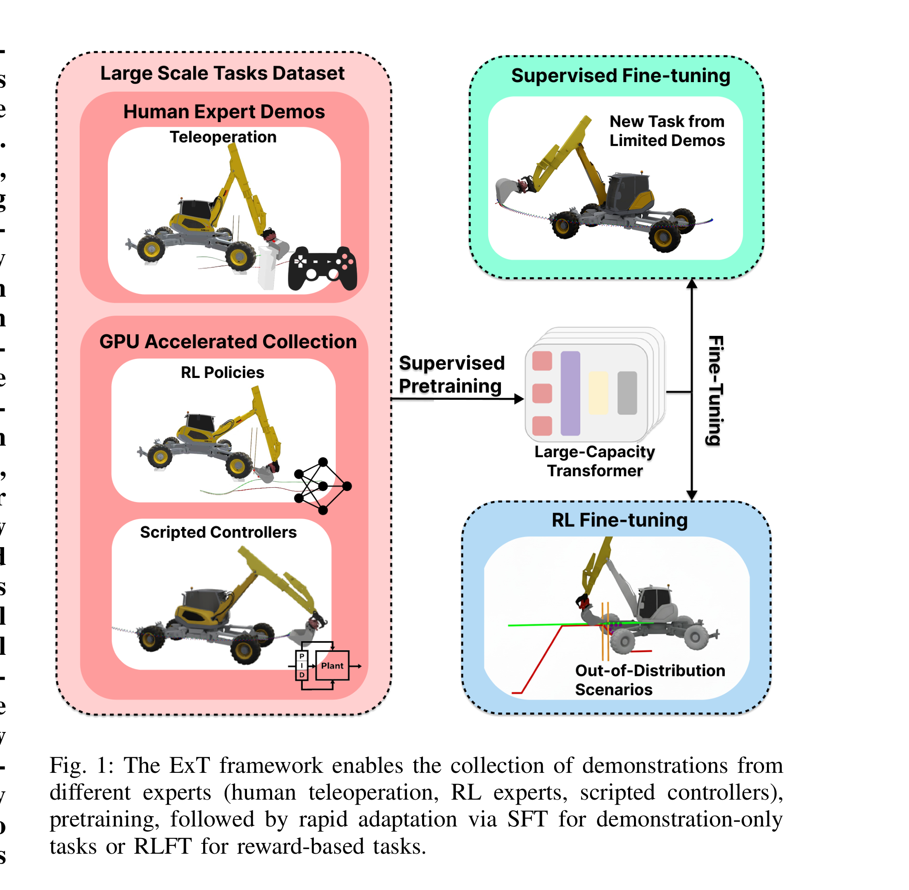
2) 요약
사람·RL·규칙 전문가의 다중작업 시연 기반 Transformer 사전학습, SFT·RLFT로 새 작업·토질·장비 적응
3) 방법
- 원격조작·GPU RL·규칙 제어기의 굴착·덤프·이동 시연 대량 생성
- 상태·작업 조건에서 행동을 예측하는 대용량 Transformer를 사전학습
- 시연만 있으면 SFT, 보상이 있으면 RLFT 후 실차 작업주기에 배치
4) 토의
- 한계: 제한된 장비·작업 검증이며 통합 시각인지와 실제 토양의 고충실도 학습은 미검증
- 연구주제: LiDAR·영상·유압을 한 정책에 넣고 장비별 adapter만 학습하는 굴착 foundation policy를 연구
[!tip] 2026 · 표준 버킷 암석 굴착 RL · 🧪 재현 추천 1) 대표그림
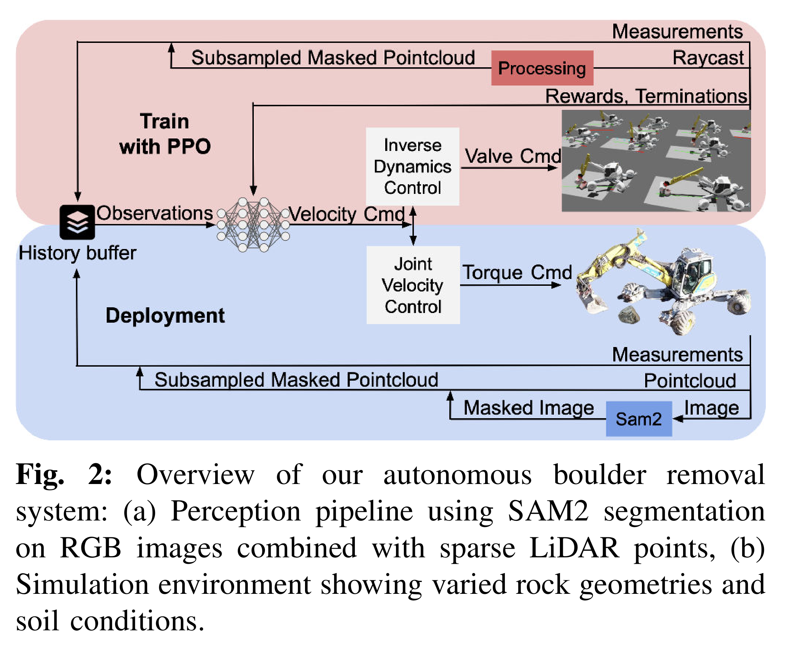
2) 요약
SAM2와 희소 LiDAR 점군, 고유감각을 사용한 RL 정책이 표준 버킷으로 토질에 맞춰 암석을 끌거나 파고들어 제거
3) 방법
- RGB의 SAM2 mask와 LiDAR를 결합해 목표 암석 점 20개를 생성
- Isaac Lab 강체와 분석 토양모델에서 관절속도 정책을 PPO로 학습
- 역동역학·저수준 속도제어를 거쳐 12톤 굴착기에서 암석을 퍼 올림
4) 토의
- 한계: 근접 가림으로 작은 암석을 놓치며 성공률 70%이고 단일 암석만 처리
- 연구주제: 시간축 암석 추적과 작업순서 계획을 결합해 여러 암석을 연속 제거
[!tip] 2026 · 대형 굴착기 고정밀 정지작업 · 🧪 재현 추천 1) 대표그림
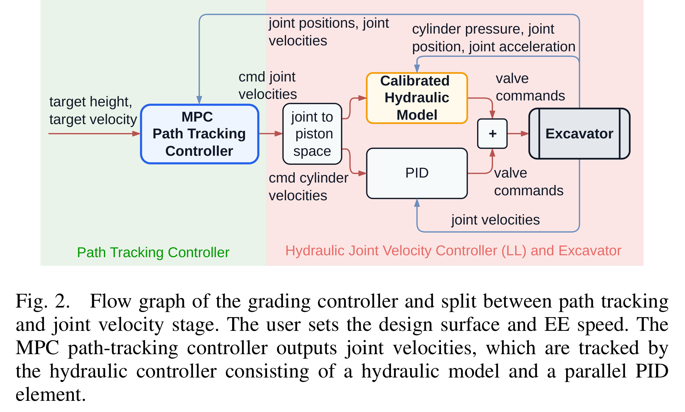
2) 요약
유압별 저수준 속도제어와 장비 독립 MPC 분리, 약 20분 보정으로 두 대형 굴착기 1.4·1.8 cm 정지 오차 달성
3) 방법
- LS mapping 또는 NFC 하중별 lookup table의 짧은 동작 보정
- feed-forward와 PID로 목표 실린더 속도를 추종
- 압력·관절 한계형 MPC의 설계면 버킷 끝 경로 생성
4) 토의
- 한계: 단순 평면의 한 번 정지만 검증했고 장비별 보정과 다중 유압기능 결합이 미검증
- 연구주제: 힘·적재량 피드백과 3D 설계면을 사용해 다중 패스 정지계획을 자동 갱신
[!note] 2026 · Holistic Fusion 범용 센서융합 1) 대표그림
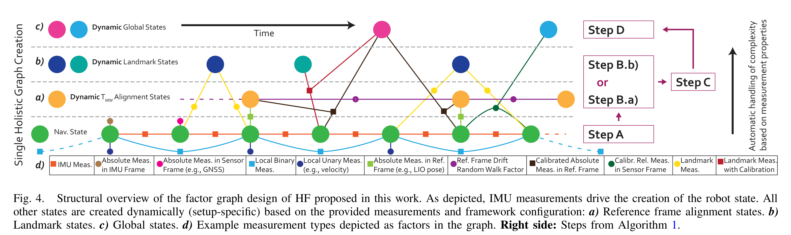
2) 요약
임의 센서와 서로 다른 기준좌표계를 단일 factor graph에서 자동 정렬·융합, IMU 속도의 매끄러운 로컬 상태와 저드리프트 전역 위치 동시 추정
3) 방법
- IMU navigation state 중심 GTSAM factor graph 구성
- GNSS·LiDAR·odometry를 absolute·local·landmark factor로 직접 입력
- 기준좌표계·landmark·외부보정을 동적 상태화하고 drift random walk·local keyframe 정렬
4) 토의
- 한계: 초기값·yaw 관측성·동적 상태 수에 따른 계산량·신규 센서별 noise tuning 의존
- 연구주제: 굴착기 GNSS 음영·LiDAR 퇴화 구간에서 dual-GNSS·LiDAR·IMU·관절 encoder의 장시간 단일 그래프 위치추정